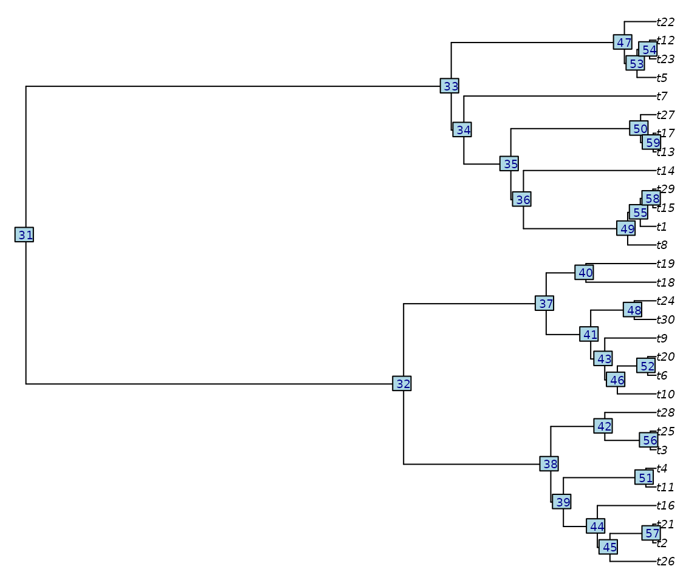
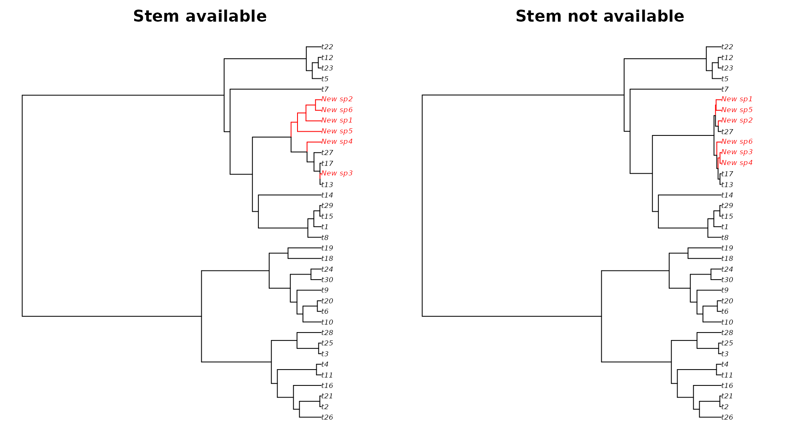
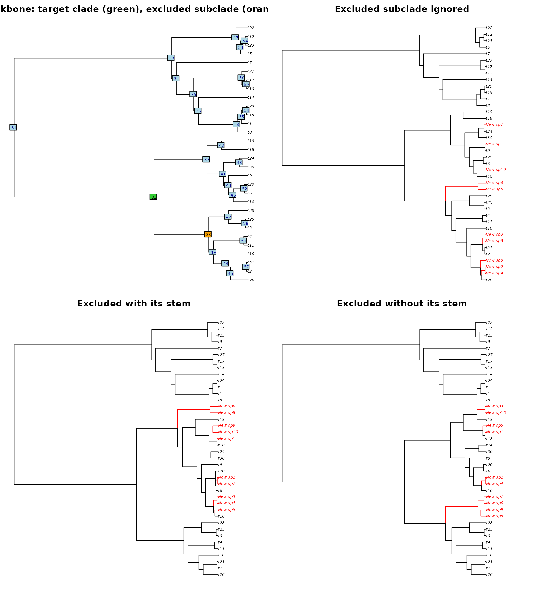
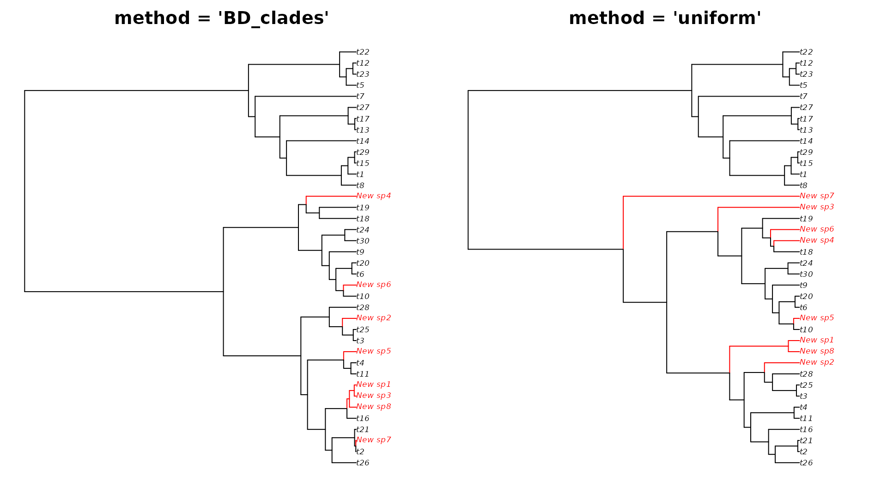
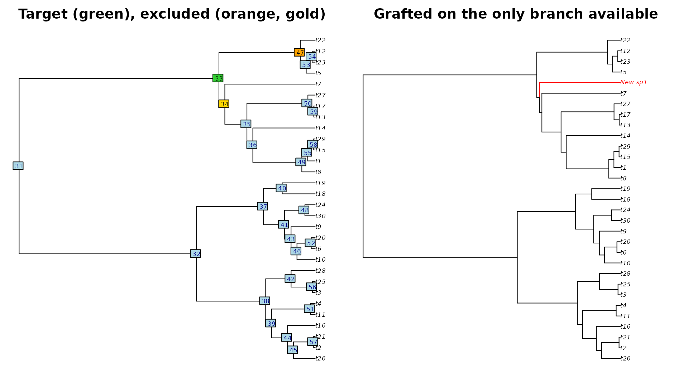
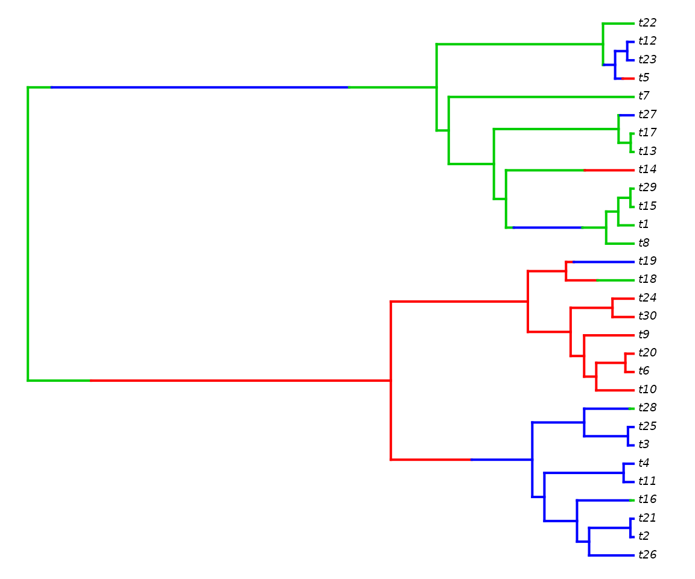
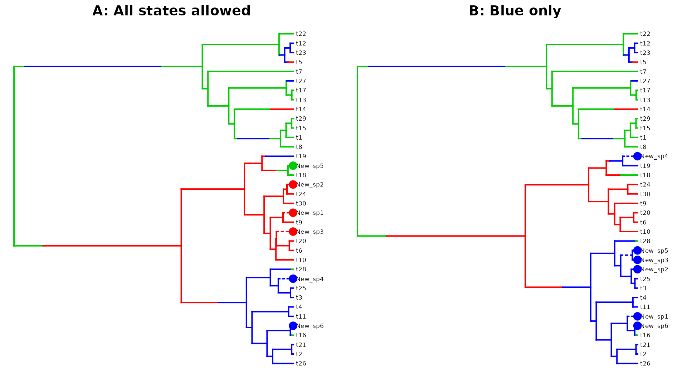
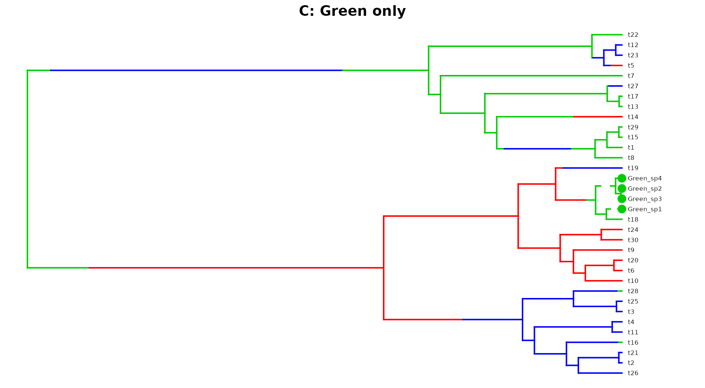

Explore options to graft missing taxa
Maël Doré
2026-11-27
Source:vignettes/graft_missing_taxa.Rmd
graft_missing_taxa.Rmdgraft_missing_taxa() grafts missing taxa within
target clades of the backbone phylogeny. The
vignette("main_workflow") shows the complete workflow with
its default settings. This tutorial instead explores the
arguments of the function and explain how they work and
how they affect the output:
- Where taxa can be grafted: target clades, stem branches, excluded subclades.
-
How the divergence ages are drawn: the method, the
birth-death models,
min_tips. -
Unsampled species: the
total_richness_per_clades. -
Species attributes: stochastic maps
(
simmap) and allowed states.
Each section changes one group of arguments and compares the grafted phylogenies side by side, with the same seed, so that the differences come from the arguments. Grafting is stochastic: the grafted phylogenies you obtain with other seeds will differ in the details, but the effects of the constraints remain.
Arguments not covered here
Some arguments are explained in dedicated tutorials:
-
seed,nb_simulations,force_simulations, and the use of several stochastic maps, to handle uncertainty and ensure the reproducibility of the runs with the seed system: seevignette("handle_uncertainty"); -
parallelcomputation to speed up the process: seevignette("parallel_grafting"); -
save_temp,resumeand the other arguments used to save temporary files and resume interrupted runs: seevignette("resume_run"); -
treat_states_as_ranges, and the stochastic maps of several traits used together: seevignette("biogeographic_data")andvignette("multiple_traits").
0/ Setup
We use the toy backbone, and helper functions that build a list of taxa to graft in a clade, and report where the taxa were grafted.
data(toy_backbone)
# Plot the backbone with its node IDs, to identify the clades used below
ape::plot.phylo(toy_backbone, cex = 0.6, no.margin = TRUE)
ape::nodelabels(cex = 0.6, frame = "rect", bg = "lightblue", col = "darkblue")
# Helper 1: build a missing_taxa_list of n taxa to graft in a target clade defined by tips
make_list <- function(n, target_tips, prefix = "New_sp", excluded = NULL)
{
taxa <- paste0(prefix, seq_len(n))
out <- list(Taxon_name = taxa,
Target_clade = setNames(rep(list(target_tips), n), taxa))
if (!is.null(excluded)) out$Excluded_subclades <- setNames(rep(list(excluded), n), taxa)
return(out)
}
# Helper 2: for each taxon, is it nested within a clade of the grafted phylogeny (defined by tips)?
is_nested_in <- function(phy_grafted, clade_tips, taxa)
{
clade_node <- ape::getMRCA(phy_grafted, clade_tips)
taxa %in% ape::extract.clade(phy_grafted, clade_node)$tip.label
}
# Helper 3: plot two grafted phylogenies side by side
plot_two <- function(phy_1, title_1, phy_2, title_2)
{
par(mfrow = c(1, 2), mar = c(0.5, 0.5, 2, 0.5))
plot_grafted(phy_1, use_simmap = FALSE, cex = 0.55, main = title_1)
plot_grafted(phy_2, use_simmap = FALSE, cex = 0.55, main = title_2)
par(mfrow = c(1, 1), mar = c(5.1, 4.1, 4.1, 2.1))
}1/ Where can taxa be grafted?
Each taxon is grafted within its target clade: the
branches available are all the branches of the clade, plus its
stem branch if the taxon can use it. The branches of
excluded subclades nested within the target clade are
removed from the pool of available branches. These constraints can be
set for all taxa with global arguments, and for
each taxon with the columns of the
missing_taxa_list (these take precedence over the global
arguments).
Stem of the target clade:
include_target_clade_stem
With include_target_clade_stem = TRUE (default), a taxon
can be grafted on the stem branch of its target clade,
and so becomes sister to the clade instead of being
nested within it. Taxa grafted on the stem are part of the stem
region, so other taxa of the clade can then be grafted on it
too. With FALSE, taxa are always nested within the target
clade.
Here, we graft 6 taxa in Gen_1 (node 50, defining tips
t13 and t27): a clade with a long stem,
containing 3 backbone tips (t13, t17, and
t27). We perform the grafting with and without the
stem available to compare:
# ------ Stem of the target clade: available or not ------ #
# Create list of taxa to graft
taxa_gen1 <- make_list(n = 6, target_tips = c("t13", "t27"))
# Graft with target clade's stem available (default)
grafted_stem <- graft_missing_taxa(phy = toy_backbone, missing_taxa_list = taxa_gen1,
include_target_clade_stem = TRUE, seed = 2, verbose = FALSE)
# Graft with target clade's stem not available
grafted_no_stem <- graft_missing_taxa(phy = toy_backbone, missing_taxa_list = taxa_gen1,
include_target_clade_stem = FALSE, seed = 2, verbose = FALSE)
# Check which taxa ended nested within the target clade
is_nested_in(grafted_stem, c("t13", "t27"), taxa_gen1$Taxon_name)
#> [1] FALSE FALSE TRUE FALSE FALSE FALSE
is_nested_in(grafted_no_stem, c("t13", "t27"), taxa_gen1$Taxon_name)
#> [1] TRUE TRUE TRUE TRUE TRUE TRUE
plot_two(grafted_stem, "Stem available", grafted_no_stem, "Stem not available")
Taxa that are not nested in the clade
(is_nested_in = FALSE) are grafted on its stem, so they are
sister to the initial target clade. With a long stem available for a
somewhat young target clade otherwise, most of the missing taxa end up
grafted on the stem region when it is available. To graft taxa
specifically on the stem branch of a clade, use
graft_missing_clades() instead, see
vignette("graft_missing_clades").
The stem can be allowed for some taxa only, with the column
include_target_clade_stem of the list (NA uses
the global argument):
# Taxon-level values: the stem is available for the first three taxa only
taxa_gen1$include_target_clade_stem <- setNames(c(TRUE, TRUE, TRUE, FALSE, FALSE, FALSE),
taxa_gen1$Taxon_name)
taxa_gen1$include_target_clade_stem
#> New_sp1 New_sp2 New_sp3 New_sp4 New_sp5 New_sp6
#> TRUE TRUE TRUE FALSE FALSE FALSEExcluded subclades: use_excluded_subclades and
exclude_subclades_stem
Some subclades of the target clade may have to be
excluded from the pool of available branches (e.g.,
because the missing taxa are known not to belong to them). They are
provided in Excluded_subclades, as pairs of tips (or a
single tip), and are used when
use_excluded_subclades = TRUE (default). With
exclude_subclades_stem = TRUE (default), the stem
of the excluded subclade is excluded too: taxa can be neither
nested within the subclade, nor sister to it. With FALSE,
only the branches within the subclade are excluded, so
taxa can still be sister to it.
Like the stem of target clades, exclude_subclades_stem
can be set for each excluded subclade in the list using the dedicated
items $Excluded_subclades and
$exclude_subclades_stem in
missing_taxa_list.
Here, we graft 10 taxa in Family_A (node
32), excluding the subclade defined by the tips
t28 and t26 (node 38, 9 tips). We
preform grafting with and without the excluded subclade, with and
without its stem available. We then count the taxa nested within
the excluded subclade, and the taxa grafted on its
stem (i.e., sister to the subclade) with the diffeent
setups.
# ------ Excluded subclades: not used, excluded with stem, excluded without stem ------ #
# Define the excluded subclade using tips
excluded_tips <- c("t28", "t26")
# Check its node ID in the backbone
excluded_node <- ape::getMRCA(toy_backbone, excluded_tips)
# Define the target clade using tips, and check its node ID in the backbone
target_tips <- c("t26", "t18")
target_node <- ape::getMRCA(toy_backbone, target_tips)
taxa_A <- make_list(n = 10, target_tips = target_tips, excluded = list(excluded_tips))
# The excluded subclade is ignored
grafted_not_used <- graft_missing_taxa(phy = toy_backbone, missing_taxa_list = taxa_A,
use_excluded_subclades = FALSE, seed = 202, verbose = FALSE)
# The excluded subclade and its stem are excluded (default)
grafted_excl_stem <- graft_missing_taxa(phy = toy_backbone, missing_taxa_list = taxa_A,
exclude_subclades_stem = TRUE, seed = 202, verbose = FALSE)
# Only the branches within the excluded subclade are excluded
grafted_excl_no_stem <- graft_missing_taxa(phy = toy_backbone, missing_taxa_list = taxa_A,
exclude_subclades_stem = FALSE, seed = 202, verbose = FALSE)
# Summarize where the taxa were grafted in each setup, in a table
grafted_list <- list(grafted_not_used, grafted_excl_stem, grafted_excl_no_stem)
excluded_summary <- data.frame(
Setup = c("Excluded subclade ignored", "Excluded with its stem", "Excluded without its stem"),
# Number of taxa nested within the excluded subclade
nb_nested = sapply(grafted_list, function(phy_grafted)
sum(is_nested_in(phy_grafted, excluded_tips, taxa_A$Taxon_name))),
# Number of taxa grafted on the stem of the excluded subclade (parent node = the node of the subclade)
nb_on_stem = sapply(grafted_list, function(phy_grafted)
sum(extract_grafting_info(phy_grafted, taxa_A, toy_backbone)$parent_node == excluded_node)))
excluded_summary
#> Setup nb_nested nb_on_stem
#> 1 Excluded subclade ignored 5 2
#> 2 Excluded with its stem 0 0
#> 3 Excluded without its stem 0 4
# Plot the results from the different options
par(mfrow = c(2, 2), mar = c(0.5, 0.5, 2, 0.5))
# Top left: the backbone with its node IDs, the target clade (node 32) in limegreen,
# and the excluded subclade (node 38) in orange
ape::plot.phylo(toy_backbone, cex = 0.55, main = "Backbone: target clade (green), excluded subclade (orange)")
ape::nodelabels(cex = 0.55, frame = "rect", bg = "lightblue", col = "darkblue")
ape::nodelabels(node = target_node, cex = 0.55, frame = "rect", bg = "limegreen", col = "black")
ape::nodelabels(node = excluded_node, cex = 0.55, frame = "rect", bg = "orange", col = "black")
# Top right: without excluded subclade
plot_grafted(grafted_not_used, use_simmap = FALSE, cex = 0.55, main = "Excluded subclade ignored")
# Bottom left: exclude subclade and its stem
plot_grafted(grafted_excl_stem, use_simmap = FALSE, cex = 0.55, main = "Excluded with its stem")
# Bottom right: exclude subclade but keep its stem available for grafting
plot_grafted(grafted_excl_no_stem, use_simmap = FALSE, cex = 0.55, main = "Excluded without its stem")
When the subclade is ignored, taxa are nested within it. When it is
excluded with its stem, no taxon is nested in it or sister to
it. When only its internal branches are excluded
(exclude_subclades_stem = FALSE), no taxon is
nested in it, but taxa can be grafted on its stem, and become
sister to the subclade.
Single tips can be excluded too, but only with
exclude_subclades_stem = TRUE: the terminal branch of a tip
is its stem, so a single tip excludes nothing if its stem is not
excluded (a warning reports these cases).
2/ How are the divergence ages drawn?
The method argument defines how the
branch and the divergence age of each
taxon are drawn among the available branches:
-
"BD_clades"(default, recommended) fits a birth-death (BD) model on each target clade, and draws the divergence ages of the taxa of the clade jointly from this model: the ages follow the diversification dynamics of the clade. -
"uniform"draws a branch with a probability proportional to its length, and an age uniformly along it. It is faster, but ignores the diversification dynamics: under a BD process, divergences are more likely to be recent than old; conversely,"uniform"gives too much weight to old divergence ages.
Here, we graft the same 8 taxa in Family_A with both
methods:
# ------ Method: BD_clades vs uniform ------ #
# Create list of taxa to graft
taxa_A_all <- make_list(n = 8, target_tips = c("t26", "t18"))
# Graft using both methods
grafted_BD <- graft_missing_taxa(phy = toy_backbone, missing_taxa_list = taxa_A_all,
method = "BD_clades", seed = 1234, verbose = FALSE)
grafted_uniform <- graft_missing_taxa(phy = toy_backbone, missing_taxa_list = taxa_A_all,
method = "uniform", seed = 1234, verbose = FALSE)
plot_two(grafted_BD, "method = 'BD_clades'", grafted_uniform, "method = 'uniform'")
# Explore divergence ages of the taxa (the age at which they split from their sister lineage)
# across both methods
ages <- data.frame(
BD_clades = extract_grafting_info(grafted_BD, taxa_A_all, toy_backbone)$divergence_age,
uniform = extract_grafting_info(grafted_uniform, taxa_A_all, toy_backbone)$divergence_age)
rownames(ages) <- taxa_A_all$Taxon_name
round(ages, 2)
#> BD_clades uniform
#> New_sp1 0.31 1.68
#> New_sp2 2.09 5.28
#> New_sp3 0.31 12.30
#> New_sp4 7.56 3.86
#> New_sp5 1.91 0.88
#> New_sp6 1.94 4.36
#> New_sp7 0.07 26.59
#> New_sp8 1.04 1.68
round(colMeans(ages), 2)
#> BD_clades uniform
#> 1.90 7.08The ages are drawn at random, so the difference between the two
methods is better assessed on many grafted taxa or many
simulations (see vignette("handle_uncertainty"))
rather than on a single phylogeny. However, the overall expectation is
for the "uniform" to be biased towards older divergence
ages. Please consider the "uniform" method only as a fast
alternative for very large phylogenies, or when no BD model can be
fitted.
Fit the BD models on enough tips: min_tips
A BD model needs enough tips to be fitted. If the target clade has
fewer than min_tips tips (default:
5, minimum: 3), the model is fitted on the
smallest enclosing clade with at least
min_tips tips: the first clade found by walking rootward
from the target clade that comprises a required number of tips. The
divergence ages for grafting are still drawn only within the target
clade (and its stem, if allowed).
The BD models fitted can be reported with
return_BD_model_summary = TRUE and inspected a posteriori
with extract_BD_model_summary() Here, we graft a taxon in
Tribe_B2 (3 tips: t5, t12,
t23) with two values of min_tips
(3, the target clade has enough tips, and 5,
it does not). Then, we compare the fits of the BD
models used to simulate the divergence ages used for grafting
within the target clade:
# ------ min_tips: clade used to fit the birth-death model ------ #
# Create list of taxa to graft
taxa_small <- make_list(n = 1, target_tips = c("t5", "t12"))
# Graft using different thresholds for the minimum number of tips in enclosing clades
grafted_min3 <- graft_missing_taxa(phy = toy_backbone, missing_taxa_list = taxa_small,
min_tips = 3, return_BD_model_summary = TRUE,
seed = 1234, verbose = FALSE)
grafted_min5 <- graft_missing_taxa(phy = toy_backbone, missing_taxa_list = taxa_small,
min_tips = 5, return_BD_model_summary = TRUE,
seed = 1234, verbose = FALSE)
# Summary of the BD models: initial clade vs enclosing clade used to fit the diversification model
cols <- c("initial_clade_n_tips", "enclosing", "fitted_clade_n_tips", "min_tips",
"net_diversification", "relative_extinction", "rho")
rbind(extract_BD_model_summary(grafted_min3)[, cols], extract_BD_model_summary(grafted_min5)[, cols])
#> initial_clade_n_tips enclosing fitted_clade_n_tips min_tips
#> 1 3 FALSE 3 3
#> 2 3 TRUE 13 5
#> net_diversification relative_extinction rho
#> 1 0.006166397 0.99 0.7500000
#> 2 0.003920414 0.99 0.9285714With min_tips = 5, the model is fitted on a 13-tip
enclosing clade: the rates describe the dynamics of a larger part of the
tree rather than of the target clade, and differ from the rates of the
3-tip clade. You can play with the min_tips parameter to
adjust the way BD models are fitted:
- increase
min_tipsif the rates estimated on small clades are not reliable; - decrease
min_tips(down to3) to keep the model close to the target clade.
When no age can be used: max_age_redraws
With "BD_clades", an age drawn from the model can fall
at a time when no available branch exists. Such ages
are discarded and redrawn, up to max_age_redraws times
(default 1000) before the function stops with an
informative message. Increase it if the constraints leave a small window
of possible ages, or use method = "uniform".
To illustrate, we graft a taxon in Family_B (node
33), with constraints that leave a single short and
deep branch available for grafting:
- the subclade of node
47(tipst5andt22) is excluded with its stem; - the subclade of node
34(tipst8andt7) is excluded, but its stem is kept available (exclude_subclades_stem = FALSE); - the stem of the target clade is not available
(
include_target_clade_stem = FALSE).
The only branch left is the stem of node 34, which spans
ages from about 16.3 to 15.3, i.e., 6% of the time
window of the divergence ages (from the present to the crown
age of the target clade, about 16.3). Most of the ages drawn from the BD
model are recent, so they fall outside this branch and many redraws are
needed.
# ------ max_age_redraws: constraints that leave a narrow window for grafting ------ #
# Target clade (node 33) and excluded subclades (nodes 47 and 34), defined by tips
target_tips_B <- c("t8", "t22")
excluded_47 <- c("t5", "t22")
excluded_34 <- c("t8", "t7")
# Check the node IDs in the backbone
sapply(list(target = target_tips_B, excluded_47 = excluded_47, excluded_34 = excluded_34),
function(tips) ape::getMRCA(toy_backbone, tips))
#> target excluded_47 excluded_34
#> 33 47 34
# Missing taxon with its constraints:
# the stem of node 47 is excluded (TRUE), the stem of node 34 is kept (FALSE)
taxon_narrow <- make_list(n = 1, target_tips = target_tips_B, excluded = list(excluded_47, excluded_34))
taxon_narrow$exclude_subclades_stem <- list(New_sp1 = c(TRUE, FALSE))
# With a low value of max_age_redraws, the function stops with an informative message
tryCatch(
graft_missing_taxa(phy = toy_backbone, missing_taxa_list = taxon_narrow,
include_target_clade_stem = FALSE, max_age_redraws = 100,
seed = 1234, verbose = FALSE),
error = function(e) cat("Error:", conditionMessage(e)))
#> Error: No usable divergence age was found for 1 taxa of the target clade defined by t8, t22 after 100 redraws of their divergence ages ('max_age_redraws').
#> Time window of the divergence ages: from age 0 to age 16.25 (crown age of the target clade).
#> Share of this window crossed by the available branches (current tree):
#> - New_sp1: 6.15%
#> No available branch crosses the ages drawn: the part of the time window where branches are available is too narrow or too far from the ages expected from the diversification model.
#> Increase 'max_age_redraws', adjust the excluded subclades or the stem availability, or use method = 'uniform'.The message reports the share of the time window crossed by
the available branches (6.15%), and the possible fixes. The
number of redraws used is not reported, but we can find how many are
needed by increasing max_age_redraws until the grafting
succeeds:
# Try increasing values of max_age_redraws, with the same seed
redraws_values <- c(10, 100, 300, 500, 1000)
redraws_success <- sapply(redraws_values, function(redraws)
!inherits(try(graft_missing_taxa(phy = toy_backbone, missing_taxa_list = taxon_narrow,
include_target_clade_stem = FALSE, max_age_redraws = redraws,
seed = 1234, verbose = FALSE), silent = TRUE), "try-error"))
# Summarize results
data.frame(max_age_redraws = redraws_values, grafted = redraws_success)
#> max_age_redraws grafted
#> 1 10 FALSE
#> 2 100 FALSE
#> 3 300 FALSE
#> 4 500 TRUE
#> 5 1000 TRUEFor this seed, between 300 and 500 redraws are needed: the grafting
fails with the lower values and succeeds with the higher ones, including
the default (1000). The number needed varies among seeds,
so keep a safe margin. When the window is even
narrower, increase max_age_redraws further, relax the
constraints, or use method = "uniform".
We can check that the taxon was grafted on the only branch available:
# Graft with the default number of redraws
grafted_narrow <- graft_missing_taxa(phy = toy_backbone, missing_taxa_list = taxon_narrow,
include_target_clade_stem = FALSE, seed = 1234, verbose = FALSE)
par(mfrow = c(1, 2), mar = c(0.5, 0.5, 2, 0.5))
# Left: the backbone with its node IDs, the target clade (node 33) in limegreen,
# the excluded subclade with its stem excluded (node 47) in orange, and with its stem kept (node 34) in gold
ape::plot.phylo(toy_backbone, cex = 0.55, main = "Target (green), excluded (orange, gold)")
ape::nodelabels(cex = 0.55, frame = "rect", bg = "lightblue", col = "darkblue")
ape::nodelabels(node = 33, cex = 0.55, frame = "rect", bg = "limegreen", col = "black")
ape::nodelabels(node = 47, cex = 0.55, frame = "rect", bg = "orange", col = "black")
ape::nodelabels(node = 34, cex = 0.55, frame = "rect", bg = "gold", col = "black")
# Right: the grafted phylogeny, with the taxon sister to the subclade of node 34
plot_grafted(grafted_narrow, use_simmap = FALSE, cex = 0.55, main = "Grafted on the only branch available")
3/ Unsampled species: total_richness_per_clades
The backbone and the taxa to graft may not cover all the species of
the clades. Providing the total richness of clades (see
vignette("format_inputs")) lets the BD models account for
the unsampled species with:
total_richness = nb_backbone + nb_missing + nb_unsampled.
Therefore, BD models are fitted with sampling
fraction defined as
rho = n_present / (n_present + n_pending + n_unsampled) to
account for those unsampled species. Unsampled species are only
used to fit the models: they are not grafted. A lower sampling
fraction affects the estimated rates, and so the ages drawn for the
grafted taxa.
Here, we graft 3 taxa in Family_A (17 tips in the
backbone) without total richness, and with a total richness of 60
species:
# ------ Total richness: no unsampled species vs many unsampled species ------ #
# Create list of taxa to graft
taxa_A3 <- make_list(n = 3, target_tips = c("t26", "t18"), prefix = "Fam_A_sp")
taxa_A3$Target_clade_name <- setNames(rep("Family_A", 3), taxa_A3$Taxon_name)
# Create richness table to account for unsampled species
# Total richness of Family_A: 60 species, so 60 - 17 - 3 = 40 unsampled species
richness_A <- list(Target_clade = list(c("t26", "t18")), Target_clade_name = "Family_A", total_richness = 60)
# Graft with and without accounting for unsampled species
grafted_no_richness <- graft_missing_taxa(phy = toy_backbone, missing_taxa_list = taxa_A3,
return_BD_model_summary = TRUE, seed = 1234, verbose = FALSE)
grafted_richness <- graft_missing_taxa(phy = toy_backbone, missing_taxa_list = taxa_A3,
total_richness_per_clades = richness_A,
return_BD_model_summary = TRUE, seed = 1234, verbose = FALSE)
# Inspect the effective sampling fraction and the rates of the BD models
cols <- c("Clade_name", "n_pending", "n_unsampled", "rho", "b", "d", "net_diversification", "relative_extinction")
rbind(extract_BD_model_summary(grafted_no_richness)[, cols], extract_BD_model_summary(grafted_richness)[, cols])
#> Clade_name n_pending n_unsampled rho b d
#> 1 Family_A 3 0 0.8500000 0.2723765 0.2092886
#> 2 Family_A 3 40 0.2833333 0.8171284 0.7540400
#> net_diversification relative_extinction
#> 1 0.06308790 0.7683798
#> 2 0.06308837 0.9227926
## The sampling fraction (`rho`) is lower with many unsampled species
## As a result, estimates of speciation (`b`) and extinction (`d`) rates are higherExpected effect on the divergence ages
Unsampled species lower the sampling fraction rho. For a
given tree, a lower rho means that many species of the
clade are missing from the tree, which the BD model explains with
higher speciation and extinction rates for a similar
net diversification rate (see b = speciation rates and
d = extinction rates in the BD summary table above).
With these rates, the sampled lineages are expected to have, in average, more recent divergences: the taxa to graft are expected to be grafted at younger divergence ages with many unsampled species than without.
As an illustration, we compare below the divergence ages of
100 simulations with each setting
(nb_simulations = 100, see
vignette("handle_uncertainty")):
# ------ Total richness: effect on the divergence ages (100 simulations) ------ #
# Graft 100 simulations without and with total richness
grafted_no_richness_sims <- graft_missing_taxa(phy = toy_backbone, missing_taxa_list = taxa_A3,
nb_simulations = 100, seed = 1234, verbose = FALSE)
grafted_richness_sims <- graft_missing_taxa(phy = toy_backbone, missing_taxa_list = taxa_A3,
total_richness_per_clades = richness_A,
nb_simulations = 100, seed = 1234, verbose = FALSE)
# Extract the divergence ages of the 3 taxa in each of the 100 simulations
ages_richness <- list(
"No total richness" = extract_grafting_info(grafted_no_richness_sims, taxa_A3, toy_backbone)$divergence_age,
"Total richness = 60" = extract_grafting_info(grafted_richness_sims, taxa_A3, toy_backbone)$divergence_age)
# Summarize the divergence ages
data.frame(Setup = names(ages_richness),
mean = sapply(ages_richness, mean),
median = sapply(ages_richness, median),
quantile_90 = sapply(ages_richness, quantile, probs = 0.9),
row.names = NULL)
#> Setup mean median quantile_90
#> 1 No total richness 2.472244 1.3219600 4.773924
#> 2 Total richness = 60 1.374595 0.5995995 2.773203
## The divergence ages are younger with many unsampled species, as expected4/ Species attributes: simmap and allowed states
Grafting can be constrained by a species attribute:
a stochastic map (simmap) gives the state of the attribute
along the branches of the backbone, and each taxon can only be grafted
on the portions of the branches in its allowed states.
The grafted lineage then inherits the state of the point where it was
grafted.
Allowed states are set for each taxon with the
allowed_states of the list, or for all
taxa with the global allowed_states argument (the
taxon value takes precedence). The stochastic maps are built from tip
data (see vignette("prepare_stochastic_maps")). Here we use
the toy map of a single categorical trait, with three
states ("blue", "green",
"red").
This section presents the general principle with a simple example. For more details, please refer to the tutorials dedicated to the different types of species attributes:
- for biogeographic ranges (multi-area states,
treat_states_as_ranges):vignette("biogeographic_data"); - for combining several traits (or a trait and
ranges) as constraints:
vignette("multiple_traits"); - for continuous traits:
vignette("continuous_data").
Here, we highlight the use of species attributes as
constraints by grafting 6 taxa in Family_A, allowed
in "blue" only, versus in every
state:
# ------ Load simmap of color states ------ #
# Lod toy simmap
data(toy_simmap)
# Set colors
state_colors <- c(blue = "blue", green = "green3", red = "red")
# Plot simmap
phytools::plotSimmap(toy_simmap, colors = state_colors, fsize = 0.6, lwd = 2, ftype = "i")
# ------ Allowed states: all states vs blue only ------ #
# Create list of taxa to graft
taxa_A_states <- make_list(n = 6, target_tips = c("t26", "t18"), prefix = "New_sp")
# A simmap with no allowed states only records the states of the grafted lineages: grafting is not restricted
grafted_all_states <- graft_missing_taxa(phy = toy_backbone, missing_taxa_list = taxa_A_states,
simmap = toy_simmap, allowed_states = NULL,
seed = 67, verbose = FALSE)
# Graft the same taxa, but with only blue as 'allowed_state'
grafted_blue <- graft_missing_taxa(phy = toy_backbone, missing_taxa_list = taxa_A_states,
simmap = toy_simmap, allowed_states = "blue",
seed = 67, verbose = FALSE)
# The simmap is updated: the grafted tips have the state of the point where they were grafted
phytools::getStates(grafted_all_states$simmap, type = "tips")[taxa_A_states$Taxon_name]
#> New_sp1 New_sp2 New_sp3 New_sp4 New_sp5 New_sp6
#> "red" "red" "red" "blue" "green" "blue"
phytools::getStates(grafted_blue$simmap, type = "tips")[taxa_A_states$Taxon_name]
#> New_sp1 New_sp2 New_sp3 New_sp4 New_sp5 New_sp6
#> "blue" "blue" "blue" "blue" "blue" "blue"
# Helper: plot the updated simmap of a grafted phylogeny
# Grafted branches are dashed, and grafted tips are marked with a point in the color of their final state
plot_states <- function(phy_grafted, main)
{
plot_grafted(phy_grafted, which = "edges", simmap_colors = state_colors, fsize = 0.55, main = main)
grafted_tips <- which(phy_grafted$grafted_tips)
tip_states <- phytools::getStates(phy_grafted$simmap, type = "tips")[phy_grafted$tip.label[grafted_tips]]
ape::tiplabels(tip = grafted_tips, pch = 19, cex = 1.5, col = state_colors[tip_states])
}
par(mfrow = c(1, 2), mar = c(0.5, 0.5, 2, 0.5))
# Panel A: all states allowed
plot_states(grafted_all_states, main = "A: All states allowed")
# Panel B: blue only
plot_states(grafted_blue, main = "B: Blue only")
In panel B, taxa allowed in "blue" only are grafted on
blue portions of branches, so all the grafted tips are
blue. In panel A, taxa can be grafted anywhere within the target clade
and take any state.
Several states can be allowed (e.g.,
c("blue", "green")), and the states must match the
names of the states of the map exactly. With
return_simmap = FALSE, the updated map is not added to the
output ($simmap).
Check the room left for grafting:
min_valid_fraction
The more restrictive the states, the smaller the part of the
target clade where a taxon can be grafted, and the more the
grafting positions concentrate on it. When this part is below
min_valid_fraction (default 0.1) of
the available branches ("uniform") or of the time window of
the ages ("BD_clades"), the function warns about the taxa
concerned, so you can inspect them, e.g., with
check_grafting_plan() before grafting (see
vignette("check_grafting")).
# Restrict grafting to the "green" state only
# Green covers a small part of Family_A: a warning lists the taxa with a narrow room for grafting
taxa_restricted <- make_list(n = 4, target_tips = c("t26", "t18"), prefix = "Green_sp")
grafted_restricted <- graft_missing_taxa(phy = toy_backbone, missing_taxa_list = taxa_restricted,
simmap = toy_simmap, allowed_states = "green",
min_valid_fraction = 0.5, seed = 67, verbose = FALSE)
#> Warning: 4 taxa have less than 50% of the time window of their divergence ages covered by available branches in their allowed states ('min_valid_fraction' = 0.5): their divergence ages will be concentrated on a narrow time window, or many ages will need to be redrawn.
#> - Green_sp1 (target clade tips: t26, t18; 16.38% in allowed states)
#> - Green_sp2 (target clade tips: t26, t18; 16.38% in allowed states)
#> - Green_sp3 (target clade tips: t26, t18; 16.38% in allowed states)
#> - Green_sp4 (target clade tips: t26, t18; 16.38% in allowed states)
# Plot the result
plot_states(grafted_restricted, main = "C: Green only")
## All grafted taxa concentrate on the "green" branch portion of
## the backbone tip 't18' in the target cladeNext steps
Now that you know all the tweaks of grafting missing taxa, you may be interesting in exploring options for:
- grafting missing clades:
graft_missing_clades(), seevignette("graft_missing_clades"); - grafting both types in one run:
graft_missing_taxa_and_clades(), seevignette("combine_missing_taxa_and_clades"); -
checking the grafting plan and the resulting
grafted phylogenies: see
vignette("check_grafting"); - handling uncertainty with several simulations and
stochastic maps, and ensuring the reproducibility of
the runs with the seed system:
vignette("handle_uncertainty"); - speeding up your runs by using parallel
computation:
vignette("parallel_grafting"); -
resuming interrupted runs:
vignette("resume_run").